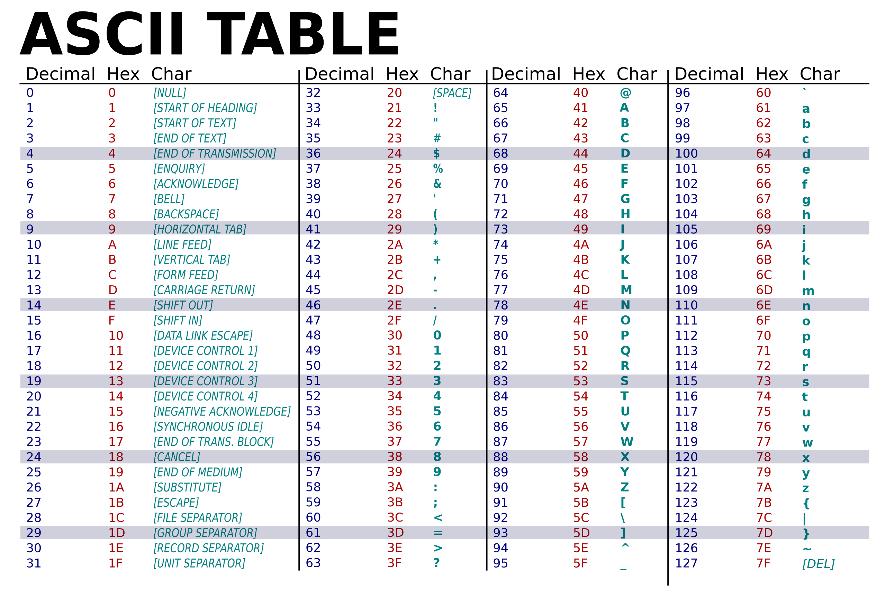

Module 3 Lab: Loops and Conditionals in RISC-V Assembly
This lab covers the utilization of the following items in RISC-V assembly:
- Loops created using branching statements.
- Conditionals created using branching statements.
- Utilization of ecall to print to console.
Lab Description
In this lab, we will write a short program using RISC-V assembly to modify a string stored in memory. Specifically, we want to change the case of all letters, making lower case letters uppercase, and upper case letters lowercase. We will do this by manipulating the ASCII encoding of each letter.
Submission Format
For this lab, you will submit a single document (Word or .pdf) containing:
- Screenshots of successfully executed assembly code for each Part/Program
- Your answers to all conceptual questions, labeled by question number (e.g., "Q2.1.3")
Part 1: Understanding ASCII
Below is an ASCII table, which shows how each character (like in C) is encoded as a interger value in the system. In this example, only the first 128 characters are shown.

The most important values to see in this table are 0 (which represents the null character, or stop character, "\0"), 65 (capital "A"), 90 (capital "Z"), 97 (lowercase "a"), and 122 (lowercase "z"). In each range, letters are listed in order and ascending. If you'd like further referece, please check out the plain text ascii table .
Additionally, for your reference: all strings in assembly always end in the stop character "\0", even though it isn't show to you as part of the string. As you work on this lab, remember that the finding the character "\0" (ASCII code 0) means the string is over.
Part 1 Conceptual Questions
Q1.1: Given that ASCII characters are represented with a two digit hexidecimal value, home many ASCII
characters can be represented with this format?
Q1.2: ASCII is referred to as a "character encoding standard". On your own, find and briefly describe at
least two (2) other character encoding standards.
Q1.3: Looking at the ASCII table, what immediately stands out to you (hint: relationship between lower and upper case
letter representations)
Part 2: Code Setup
Below is the scaffolded code you should use when starting the lab. Notice the strings loaded in, and how we can change them freely in the arguments under the label main.
# These are your test cases, make sure each work with your solution
.data
str1: .string "UnC ChaRloTtE"
str2: .string "I LoVe RISC-V"
str3: .string "O_0"
.text
main:
la a0, str3 # <--- swap out the label to test different strings
addi t0, a0, 0
# TODO: Implement your solution here
As a reminder: remember that characters are saved as 8-bit integers; you'll be loading individual bytes. If you don't remember how to do this, check the RISC-V instructions reference sheet.
Part 2 Conceptual Questions
Q2.1: Case-Swap the first string (str1) yourself, and put it as your answer here.
Q2.2: Case-Swap the second string (str2) yourself, and put it as your answer here.
Q2.3: Case-Swap the third string (str3) yourself, and put it as your answer here. Pay close attention to what are letters vs. other characters.
Part 3: Print Your String
To make debugging easier, we're going to encourage you to begin by implementing the necessary code to print out the string each time. This is achieved using ecalls. If you need reference for the call codes and utilization, refer to the ecalls reference page.
Part 3 Conceptual Questions
Q3.1: How does printing the string make debugging easier?
Q3.2: What are two other things that environmental calls can do?
Part 4: Writing Your Main Loop
The first thing to write will be the loop that accesses your string in memory. Think about the following questions:
- What should your loop start with?
- When should you load in the current character?
- What is the terminating condition (condition you stop looping)?
- How will you move onto the next character?
- How will you get back to the start of the loop?
At this stage, just focus on writing a loop that iterates over each character, loading them from memory into a temp register.
Part 4 Conceptual Questions
Q4.1: What kind of loop is most appropriate to solve this problem? Justify your answer.
Q4.2: How can you know if an ASCII character is a letter, or something else?
Part 5: Case Swap
In order to swap the case of the letters for this lab, you'll have to change the interger representation (for example, 65 for capital "A") to the corresponding representation for the other case (97 for lowercase "a")
In order to case swap the letters in code, you'll first need to determine the two following things:
- What do you do to an uppercase letter to make it lowercase?
- What do you do to a lowercase letter to make it uppercase?
Once you know how to convert the letter depending on the case, you'll need to figure out how to tell whether a letter is an uppercase or lowercase letter. Think to the values in the ASCII table, and how you can tell if they are a letter. (hint: you'll need to use conditionals for this)
Once you know how to tell if a character is a letter that needs case swap, you can implement the logic in RISC-V using branching statements. Here's a few hints to help you out when you go to implement your code:
- If a character is uppercase, you'll need to run your code to make it lowercase, but not your code to make it uppercase (you must skip this code somehow).
- If a character is lowercase, you'll need to run your code to make it uppercase, but not your code to make it lowercase (you must skip this code somehow).
- If a character is not a letter, you'll need to skip both the code to make it uppercase and lowercase (you must skip both pieces of code somehow)
- Remember that you will need to do some actions in every case, such as moving onto the next character, and jumping back to the start of the loop.
Part 5 Conceptual Questions
Q5.1: This is a real way to implement case swapping; is this how you expected case swapping to be done?
Q5.2: Would writing a function that only convers lowercase to uppercase be easier? Why or why not?
Q5.3: Now that you've written this in assembly, think about a higher level language you are familiar with (if none, please use
pseudocode). Write code, in that language, that achieves the same goal as the code here.
Q5.4: Now that you've written that other version, how different are they, and which is longer?